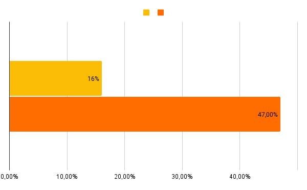
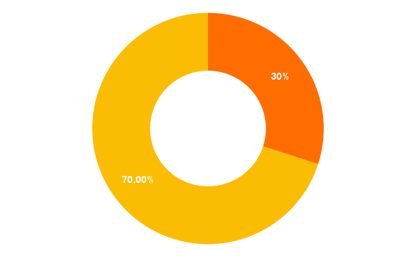
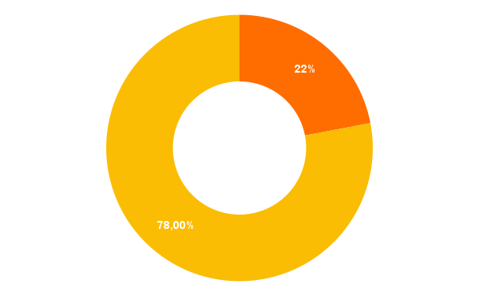
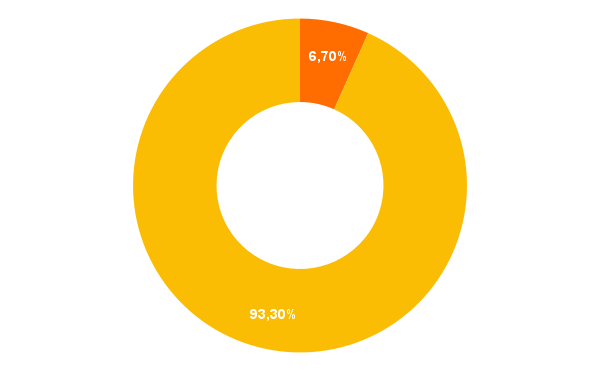

Já são 828.000.000 pessoas sofrendo de fome no mundo.
A fome é um flagelo que assola nosso mundo, lançando sua sombra sobre milhões de vidas. De acordo com dados divulgados pela Organização das Nações Unidas para a Alimentação e Agricultura (FAO), em 2021, aproximadamente 828 milhões de pessoas enfrentaram a cruel realidade da fome, enquanto impressionantes 2,3 bilhões de indivíduos foram atingidos pela insegurança alimentar moderada ou grave no mesmo período.
Entre 720 e 811 milhões de pessoas no mundo enfrentaram a fome em 2020. Considerando a média da faixa projetada (768 milhões), 118 milhões a mais de pessoas estavam enfrentando a fome em 2020 do que em 2019 - ou até mesmo 161 milhões, considerando o limite superior da faixa.
A parcela de países sobrecarregados por preços elevados de alimentos, que havia sido relativamente estável desde 2016, aumentou drasticamente de 16% em 2019 para 47% em 2020.

A má nutrição afetou gravemente as crianças, com estimativas de mais de 149 milhões de crianças menores de 5 anos sofrendo de desnutrição crônica, 45 milhões com desnutrição aguda e quase 39 milhões com excesso de peso. A alimentação saudável permaneceu inacessível para três bilhões de adultos e crianças, principalmente devido aos altos custos dos alimentos.
Para alcançar a meta de uma redução de 5% no número de crianças com retardo de crescimento até 2025, a taxa atual de declínio anual - 2,1% - deve dobrar para 3,9%.
-

Em 2020, impressionantes 2,4 bilhões de pessoas, ou mais de 30% da população mundial, estavam moderada ou severamente inseguras quanto a alimentação, sem acesso regular a alimentos adequados.
-

149,2 milhões de crianças com menos de 5 anos de idade, ou 22,0% do total, estavam sofrendo de retardo de crescimento (nanismo - baixa estatura para a idade) em 2020.
-

A caquexia (baixo peso para a estatura) afetou 45,4 milhões ou 6,7% das crianças com menos de 5 anos de idade.